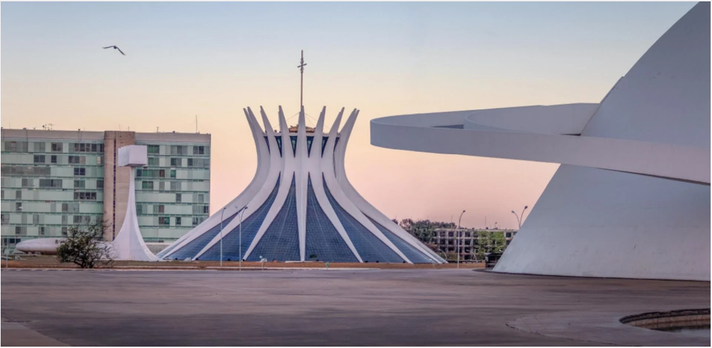
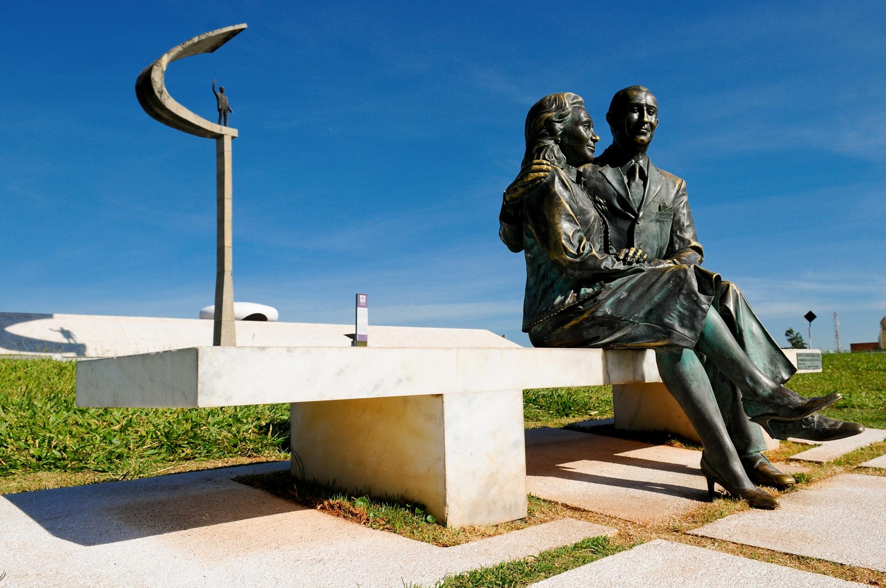
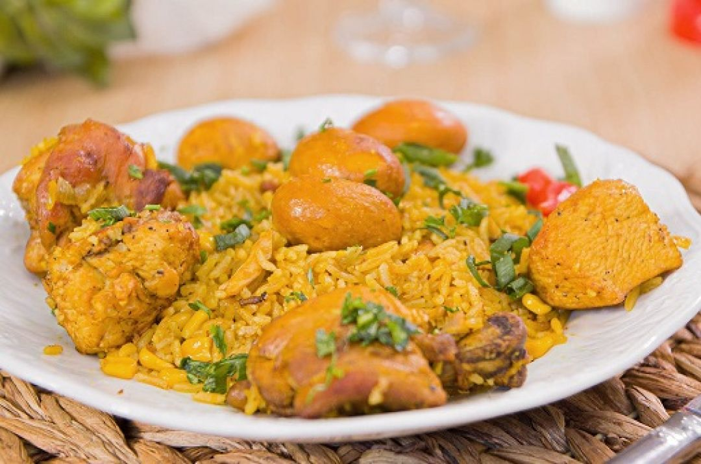

Os principais pontos turísticos para se visitar em Brasília:
-
Catedral Metropolina de Brasília
A Catedral de Brasília – oficialmente Catedral Metropolitana Nossa Senhora Aparecida – é uma das atrações mais impressionantes da capital federal. Seja pela magnífica arquitetura, vitrais coloridos ou grandiosas esculturas, a Catedral é um desses monumentos capazes de causar comoção à primeira vista. A cada visita é possível descobrir ângulos ainda mais incríveis da igreja, garantindo assim que a paixão por essa obra de arte não se esgote jamais.
-
Memorial JK
O Memorial é um museu, que abriga os restos mortais de JK, além de objetos pessoais, fotos e materiais que retratam sua vida e obra, inclundo a contrução de Brasília.
-
Palácio Itamaraty

O Palácio Itamaraty foi projetado para acolher os banquetes oferecidos pelo Presidente da República ao chefes de Estado estrangeiros em visita ao Brasil.
-
Ponte JK

A Ponte Juscelino KubitscheK, foi construída para unir o lago Sul com o Plano Piloto. A obra da Ponte JK impressiona pela funcionalidade e pela arquitetura monumental que transformam o empreendimento em uma execução ímpar da engenharia brasileira.
Roteiros Temáticos
- Rota Cívica – Visita aos principais edifícios governamentais e monumentos históricos.
- Rota Arquitetônica – Exploração das obras de Niemeyer e do urbanismo de Lúcio Costa.
- Rota Cultural – Centros culturais, teatros e espaços artísticos.
- Rota do Cerrado – Contato com a natureza e trilhas ecológicas.
Gastronomia
A gastronomia de Brasília é composta por uma fusão de diferentes influências culinárias, tendo como resultado uma variedade de pratos que vão da cozinha regional do cerrado a opçõesinternacionais. Nos sabores do cerrado temos pratos típicos como galinhada, pequi, pamonha e opções para todos os gostos.
Blog de Notícias
Festival de Inverno 2025
O Festival de Inverno de Brasília traz shows, gastronomia e arte em julho.
Nova exposição no CCBB
Mostra de arte contemporânea reúne artistas nacionais e internacionais.

Feira do Livro movimenta o Eixo Cultural
Evento reúne autores, leitores e editoras em diversas atrações gratuitas.